[1] "state" "race" "type"
[4] "all_workers_n" "artists_n" "artists_share"
[7] "location_quotient"Lab 5.
Small Multiples, Big Insights:
Maps & TidyTuesday in R
PUBH 6199: Visualizing Data with R, Summer 2026
Jahred Liddie, PhD
2026-06-18
Outline for today
- #tidytuesday: a weekly social data project
- #tidytuesday as a helpful, fun practice
- My experience with #tidytuesday
- Geofacet-ing in R
- Live walkthrough with unregulated drinking water contaminant monitoring data
- Q&A and summary
About me
Jahred Liddie, Postdoctoral Associate in the Water, Health, and Opportunity Lab at GWSPH
Research focuses: drinking water quality, exposure assessment, emerging contaminants, and environmental justice
Hobbies: flute, tennis, and playing with my dog, Georgette
What is #tidytuesday?
#tidytuesday is a weekly social data project organized by the Data Science Learning Community since 2018
Each Monday, a curated dataset is posted to their Github repo
Participants explore the data and share visualizations on social media (formerly on Twitter, now Bluesky)
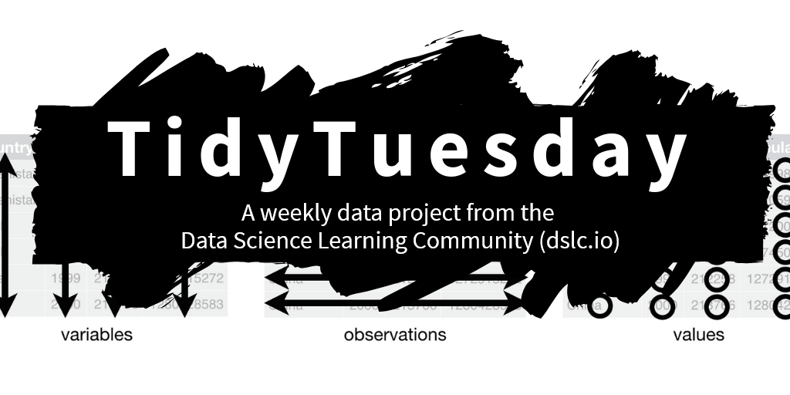
Some other notes on TidyTuesday
- Participants also encouraged to share code. This is nice since there are some very experienced R users with public TidyTuesday portfolios!
- The focus is on exploring data, rather than establishing causal relationships.
- Participants can also submit datasets for future weeks
Past example datasets
Bob Ross paintings
Weekly US gas prices
Stranger Things dialogue
A dataset of all Pokemon and their stats (available from the
pokemonpackage)

My experience with TidyTuesday
- I participated first in 2022 as a way to improve my data visualization skills
- Also enjoyed the community
- My full portfolio is available here
Some resources I found helpful…
- The R Graph Gallery: to give me ideas for different chart types
- R-Charts.com: a similar website, but with more base R and leaflet examples
- Other people’s #tidytuesday repos
- Note: in the age of more widespread LLMs, I find these useful to go to if I’m stuck on a specific formatting issue, but certainly not for making a plot from scratch
My very first plot
Key packages: cowplot, ggtext
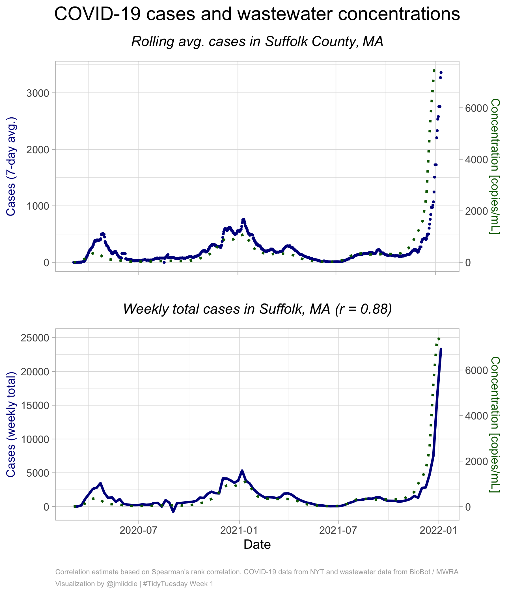
Other examples (pt 1)
Key packages: showtext, ggrepel
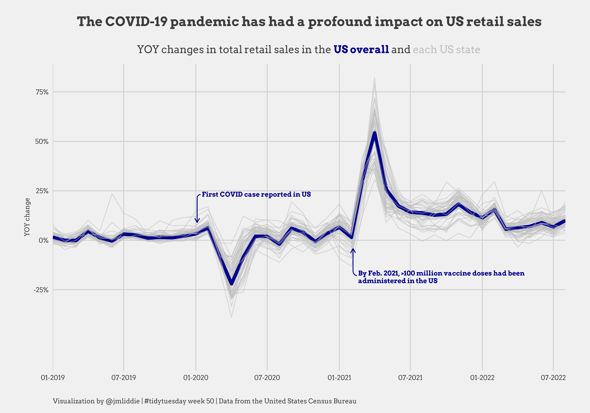
Other examples (pt 2)
Key packages: showtext, ggrepel
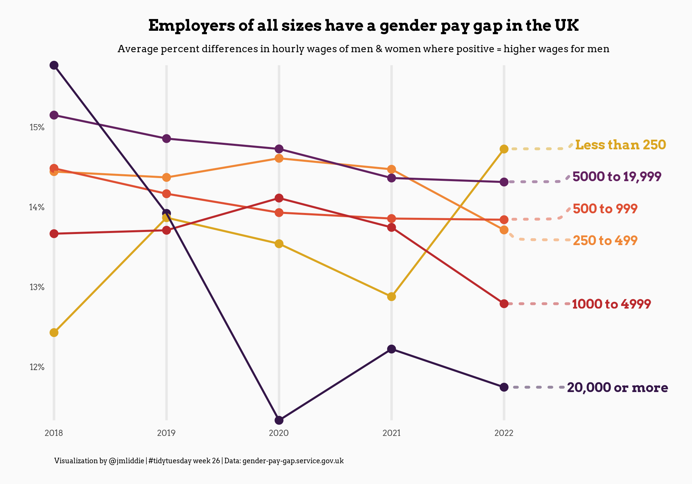
Other examples (pt 3)
Key packages: gganimate, ggtext
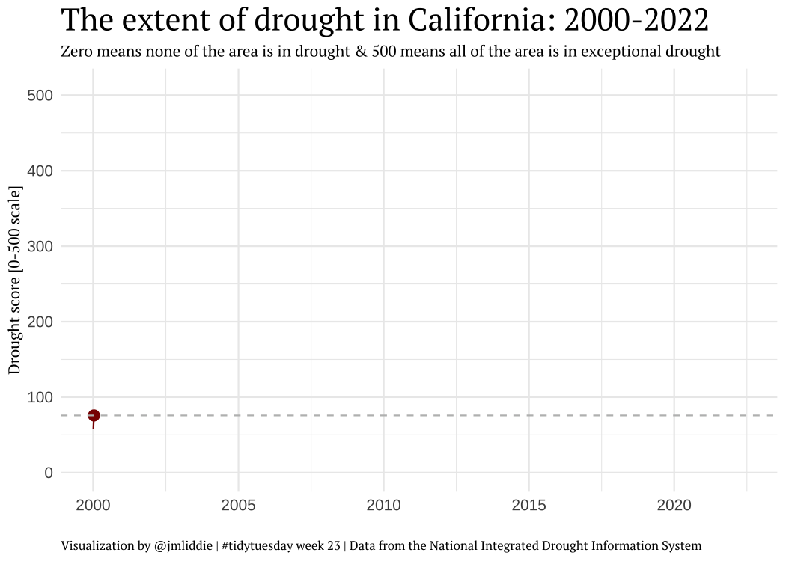
Other examples (pt 4)
Key packages: sf, ggimage, ggmap
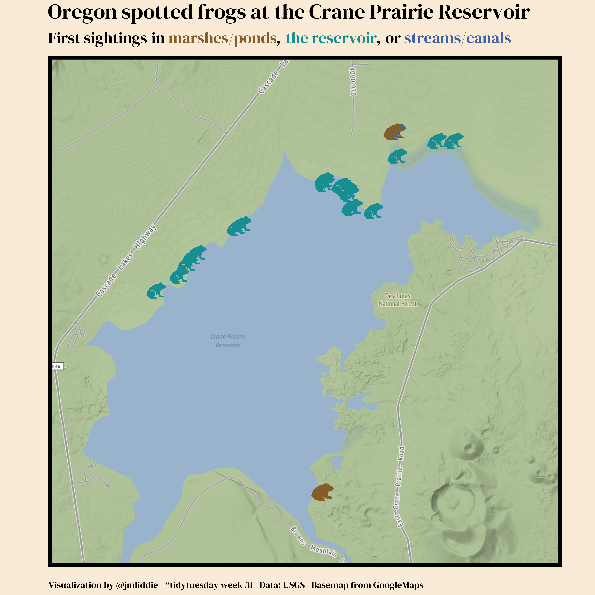
WEB Du Bois data portraits (pt 1)
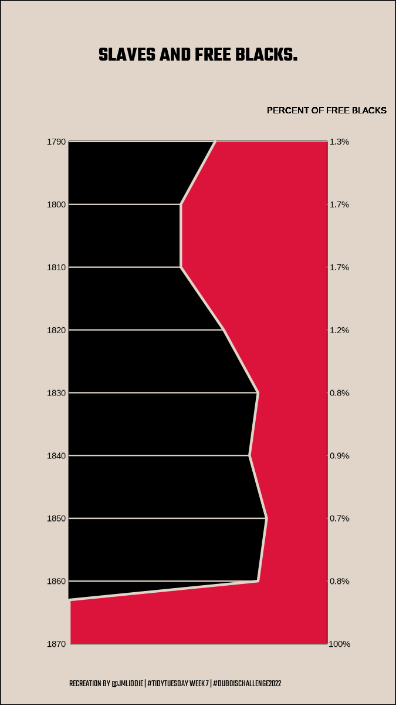
WEB Du Bois data portraits (pt 2)
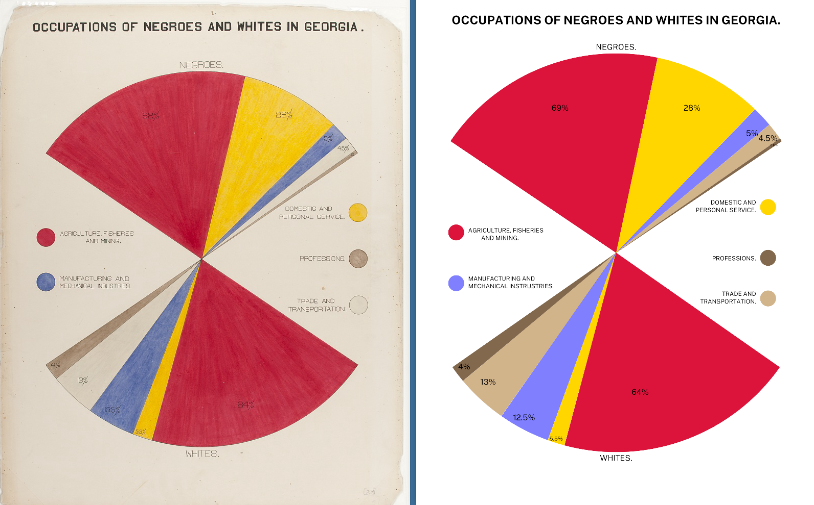
Other examples (pt 5)
Key packages: geosphere, ggmap
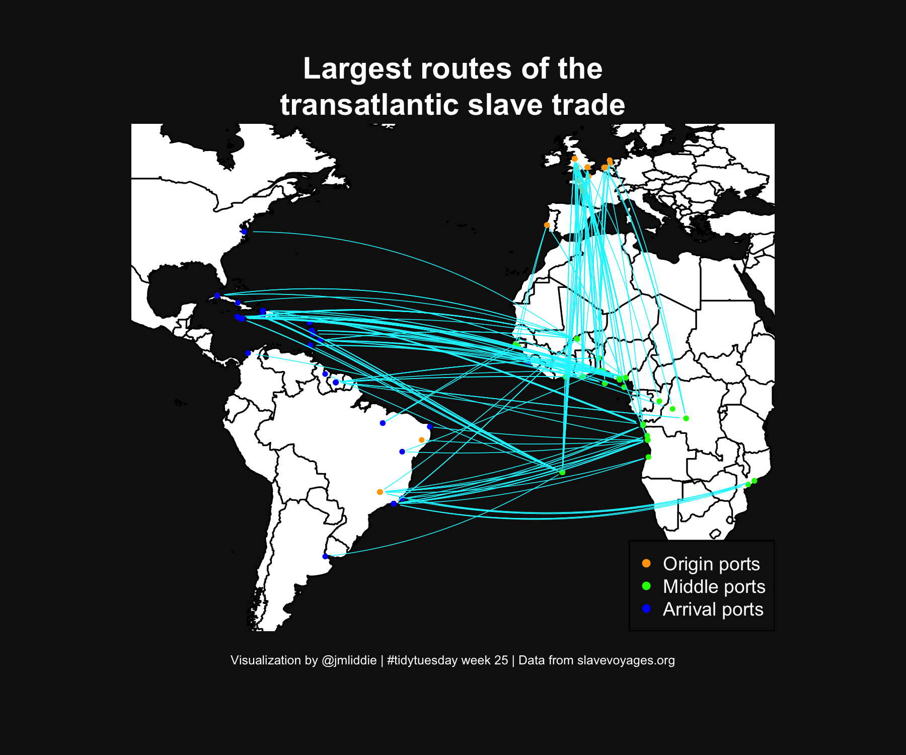
Other examples (pt 6)
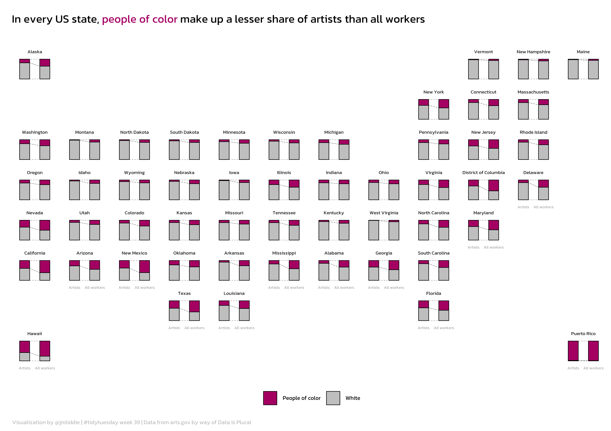
What is geofacet?
geofacetis a package developed by Ryan Hafen to display a sequence of plots (like normalfaceting) but within a structure that preserves the original geographical orientation
Let’s look at some code…(pt 1)
Load necessary libraries and the data…
Let’s take a look at some code (pt 2)
states <- rbind(
data.frame(state = datasets::state.name,
state.abb = datasets::state.abb),
data.frame(state = c("District\nof Columbia", "Puerto Rico"),
state.abb = c("DC", "PR"))
)
# set up data for plotting, calculate necessary new vars
artists <- artists %>%
mutate(POC = ifelse(race == "White", "White", "People of color"))
state.summaries <- artists %>%
group_by(state, POC) %>%
summarise(artists_n = sum(artists_n, na.rm = T),
workers_n = sum(all_workers_n)) %>%
ungroup()
totals <- artists %>%
group_by(state) %>%
summarise(total_artists = sum(artists_n, na.rm = T),
total_workers = sum(all_workers_n)) %>%
ungroup()
state.summaries <- left_join(state.summaries, totals)
state.summaries$perc_artists <- state.summaries$artists_n / state.summaries$total_artists
state.summaries$perc_workers <- state.summaries$workers_n / state.summaries$total_workers
state.summaries$diff <- state.summaries$perc_workers - state.summaries$perc_artistsLet’s look at some code (pt 3)
# finally, convert to plot format needed
state.summaries <- state.summaries %>%
select(state, POC, perc_artists, perc_workers) %>%
pivot_longer(cols = c("perc_artists", "perc_workers"), names_to = "type")
state.summaries <- state.summaries %>%
mutate(type.clean = ifelse(type == "perc_artists", "Artists", "All workers")) %>%
mutate(type.clean = factor(type.clean, levels = c("Artists", "All workers")))
state.summaries <- left_join(state.summaries, states)
# grid of states
my_grid <- us_state_grid2
# adding puerto rico manually
my_grid <- rbind(my_grid,
data.frame(row = 8, col = 12, code = "PR", name = "Puerto Rico")
)What does the my_grid object look like?
row col code name
1 6 7 AL Alabama
2 1 1 AK Alaska
3 6 2 AZ Arizona
4 6 5 AR Arkansas
5 6 1 CA California
6 5 3 CO ColoradoLet’s look at some code (pt 4)
# nice font
font_add_google("Kanit")
showtext_auto(enable = TRUE)
ggplot(state.summaries, aes(x = type.clean, y = value)) +
geom_flow(aes(alluvium = POC), lty = 2, fill = "white", color = "black",
curve_type = "linear", width = 0.5, size = 0.15) +
geom_col(aes(fill = POC), width = 0.5, color = "black", size = 0.25) +
scale_fill_manual(values = c("#a40062","grey"), name = "") +
labs(x = "", y = "", title = "In every US state, <span style = 'color: #a40062;'>people of color</span> make up a lesser share of artists than all workers",
caption = "Visualization by @jmliddie | #tidytuesday week 39 | Data from arts.gov by way of Data is Plural") +
theme_minimal() +
theme(plot.title = element_markdown(margin = margin(t = 10, b = 20), hjust = 0,
lineheight = 2, size = 70, family = "Kanit"),
plot.caption = element_markdown(hjust = 0, margin = margin(t = 10), color = "grey",
lineheight = 1.4, size = 35, family = "Kanit"),
axis.ticks = element_blank(),
axis.text.y = element_blank(),
axis.text.x = element_text(size = 25, color = "darkgrey", family = "Kanit"),
strip.text.x = element_text(size = 30, family = "Kanit"),
panel.grid.major = element_blank(),
panel.grid.minor = element_blank(),
legend.position = "bottom",
legend.text = element_text(size = 35, color = "black", family = "Kanit"),
legend.key.size = unit(0.5, 'cm')) +
facet_geo(~state, grid = my_grid, label = "name")
ggsave("2022/2022 - Week 23/artists.png", dpi = 600, width = 8.5, height = 6, bg = "white")Many other regions are supported!
There are 216 grids available in the latest version of geofacet and users can submit their own directly using grid_submit()!
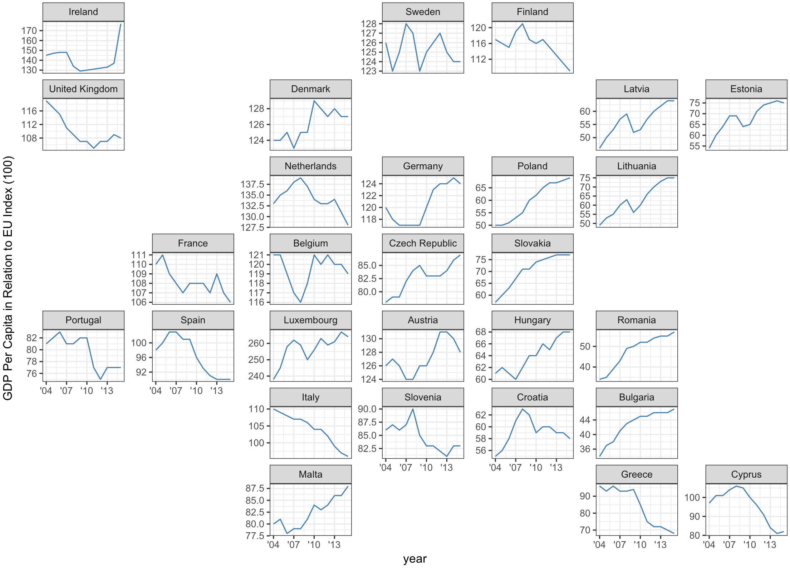
Let’s work through an example live
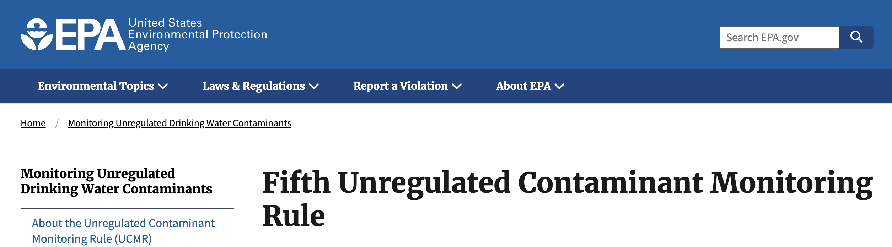
US EPA drinking water monitoring
- The US Environmental Protection Agency (EPA) monitors a list of unregulated contaminants every five years in public water systems as part of the Unregulated Contaminant Monitoring Rule (UCMR). The fifth cycle included 29 different PFAS (per- and polyfluoroalkyl substances or “forever chemicals”) and lithium.
- We’ll use the most recent release of these data to visualize trends in PFAS monitoring over time across different states. Download zip file from the course website. The zip file contains
lab5.qmd, which uses a pre-processed dataset,ucmr5_dat.csv
PUBH 6199: Visualizing Data with R